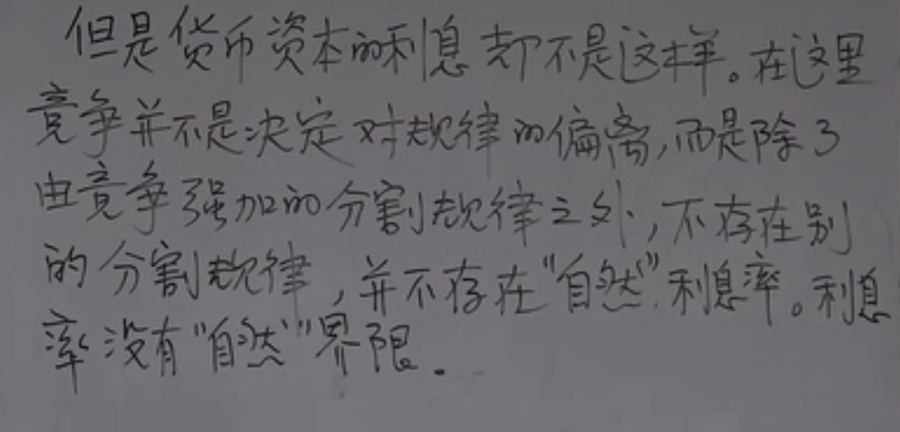

王德峰【重读资本论】
https://www.bilibili.com/video/BV1wT4y1r78r
我们在描述事实的同时，很容易会在上面加上某种范畴（政治的，经济的），相当于給具体发生的事情进行定性。
经济学主要研究资本的运作规律，假设资本运作是极其理性的，而事实并非如此。资本是靠人来运作的，而人与人之间存在某种social power(社会权利)关系：支配与被支配。
资本(Capital)一方面表现在财富(Wealth, 亚当斯密的《国富论》)，另外一方面也表现在social power上。这些social power需要political power（国家警察监狱暴力机器）的支撑。
以往social power和political power是紧密绑在一起的，反应就是政治特权阶层同时也是经济特权阶层。资本主义的发展就是要求将两者解开，但是事实上这两者很难完全分开。相信可以完全解开而最终失败的例子有前苏联。
资本主义生产目的是为了产生剩余价值，这个和传统经济/自然经济/商品交换经济的目的差别很大，它们的是为了交换商品得到自己不能生产的商品产生剩余价值。假设商品是W，资本是G，传统经济模型是W-G-W'（W'-W是使用价值增加）, 资本主义经济则是G-W-G'(G'-G就是剩余价值增加)。
资本主义生产方式首次开创了世界历史 - Karl Max.
“金银天然不是货币，货币天然是金银”。货币的发行必须和某种自然物质（Bitcoin？）关联起来，否则很容易按照国家/组织意志不断地增殖/发行，最终脱离一般等价物这个属性，反过来造成商品价格的巨大波动。
资本和技术是孪生兄弟：资本需要技术来提高效率，技术需要资本来提供土壤和环境。
资本一方面希望劳动者在相同的工资下提高生产效率产生更多的剩余价值，另一方面也希望劳动者有足够的工作去消费这些被额外创造出来的剩余价值，中间存在某种矛盾。工人即是劳动者，也是消费者。西方处理这种矛盾的方法是二次分配，全面社会福利保障。
过剩的不是剩余劳动，而是这个部分剩余劳动，没有办法转变成为剩余价值，这不是资本主义所希望的。对于这部分剩余劳动，只能是被破坏掉，自然地或者是人为地。
资本表现为商品但不是商品：货币资本的利息不是这样的（商品），在这里竞争并不是决定对规律的偏离，而是除了由竞争强加的分割规律之外，不存在别的分割规律，并不存在“自然”利息率。利息率没有“自然”界限。
